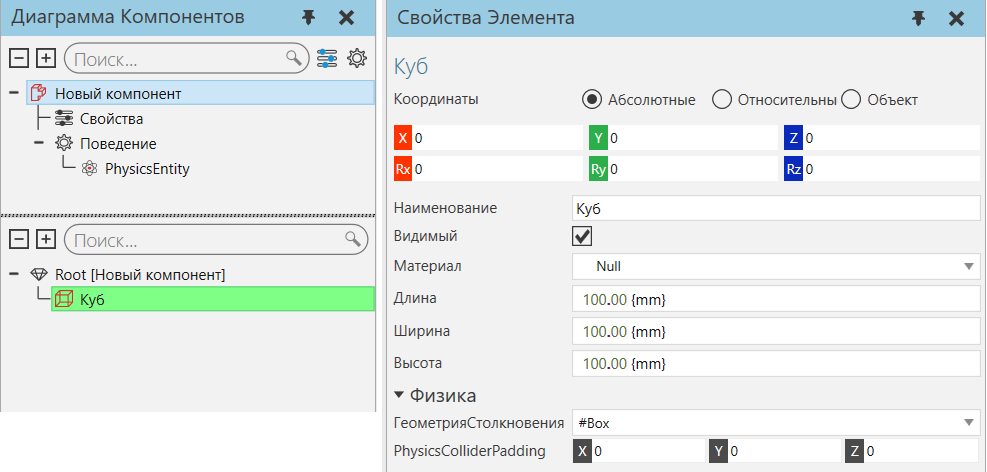

Тип поведения физика используется для реализации функций, с использованием действий физических сил.

Типы
Название |
Описание |
|---|---|
Определяет кабель и пружину, которые можно прикрепить к узлам и растянуть в зависимости от их физических свойств. |
|
Определяет узел как твердое тело, тем самым поддерживая свойство ГеометрияСтолкновения элементов узла и поведение других физических типов. |
|
Определяет соединение D6 в узле, которое можно зафиксировать, повернуть и/или сместить по осям XYZ. |
|
Перемещает компоненты с физическим поведением по пути с дополнительной поддержкой функции столкновений, например геометрии, используемой в качестве отклоняющего элемента. |
Действующие силы
Как правило, компоненту требуется по крайней мере одно поведение физического объекта для поддержки использования Геометрии Столкновения с элементами и определения узла как твердого тела. Когда вы устанавливаете свойство ГеометрияСтолкновения объекта, поведение физического объекта будет автоматически создано, если оно не существует в том же узле, что и этот объект.
